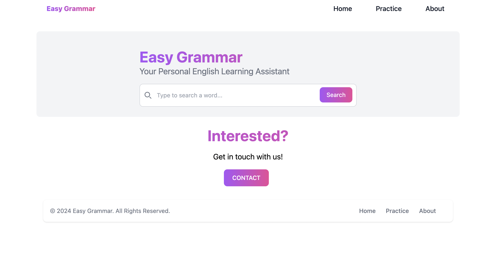

Easy Grammar
This Project was done during Software practice course. We used 2 APIs a Dictionnary API and OpenAI API using react. More than coding we perform a real project as it will have been in a company. Started from planning, organizing, developing and deployment. All that learning and using Git and Github. This website aim to help people to improve their english by looking for a word and learning about it. And to be able to describe a picture that will be provided by the OpenAI.
Customize Apple Dropper game

This project was developed during my introduction to web programing, for this project I used html,css and javascript. It is a fun customize version of the game apple dropper.